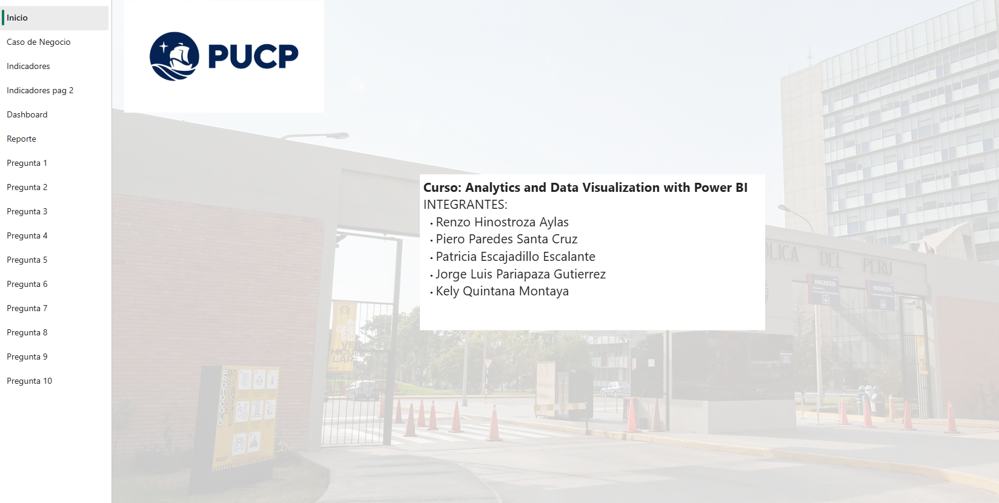
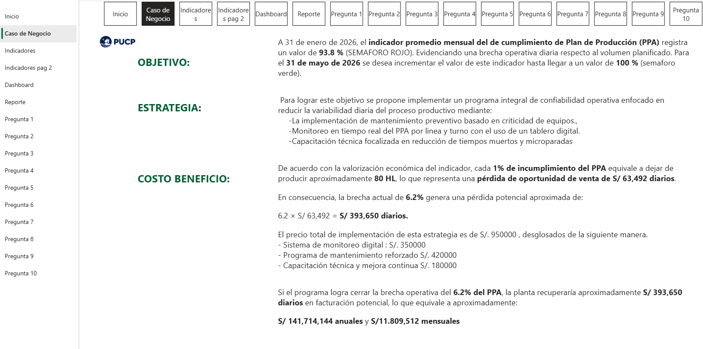

INTEGRANTES
-Renzo Hinostroza Aylas
-Piero Paredes Santa Cruz
-Patricia Escajadillo Escalante
-Jorge Luis Pariapaza Gutierrez
-Kely Quintana Montaya
Presentation Layer (Capa de Presentación)
La capa de presentación del proyecto para el analisis del INDICADOR PROMEDIO MENSUAL DEL CUMPLIMIENTO DEL PLAN DE PRODUCCION EN UNA INDUSTRIA CERVCERA EN LA PLANTA DE SAN JUAN está implementada con Microsoft Power BI, transformando los datos en reportes interactivos que permiten monitorear el desempeño de las lineas de produccion, marcas y supervisores. Cada informe fue diseñado para apoyar la toma de decisiones ejecutivas y brindar un análisis detallado del funcionamiento de la planta y el cumplimiento de su plan de producción.
- Indicadores clave (KPIs): Seguimiento de métricas como PPA, HL no producidos.
- Narrativa visual: Cada informe responde a preguntas de negocio concretas, resaltando resultados destacados.
A continuacion se muestra el informe elaborado en POWER BI

